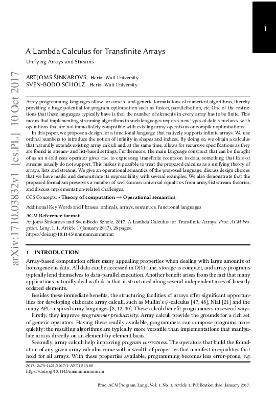

A Lambda Calculus for Transfinite Arrays: Unifying Arrays and Streams
A. Šinkarovs and S.-B. Scholz, “A lambda calculus for transfinite arrays: Unifying arrays and streams,” CoRR, vol. abs/1710.03832, Oct. 2017, Available: https://arxiv.org/abs/1710.03832
Additional Information
We have tried to publish this paper multiple times without much success.
This is a 2017 version, which is one on ArXiv. Supplementary materials include The Heh language implemenation and Semantics as a separate document.
After that we attempted to send it to POPL’18. We tried to explain our motivation in a clearer way.
Then I attempted POPL’20. This is a complete rewrite of the same idea but in the langauge of dependent types.
I still hope to publish it one day.